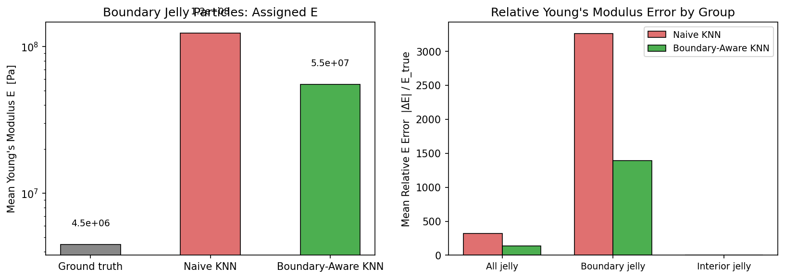

PIXIE run independently on each object, composed in shared MPM scene.
Eight instances with same PIXIE-predicted parameters, elastic collisions.
Same rubber duck geometry, same free-fall, varying Young's modulus E. PIXIE predicts E = 4×10⁴ Pa — values too low produce unphysical collapse; values too high produce near-rigid motion.
way too soft
too soft
slightly soft
physically plausible
too stiff
near-rigid
Reviewer htjP asked: "Have you measured interpolation artifacts at material boundaries, and would a boundary-aware interpolation scheme (e.g., only averaging within same-class neighbors) improve simulation fidelity?"
We study this on a tree object with two material regions — elastic leaves (E ≈ 2×10⁴ Pa, material class jelly) and a rigid trunk (E ≈ 4×10⁸ Pa, class stationary). In the current implementation, K-NN smoothing averages Young's modulus across all K neighbors regardless of class. At the elastic–rigid boundary this inflates the assigned E of elastic particles by up to 23×. A simple fix — restricting the average to same-class neighbors after class assignment — reduces boundary contamination by 2.3×, while leaving interior particles unchanged.

Left: Mean assigned E for boundary elastic particles — naive KNN inflates E to 1.24×10⁸ Pa (23× the ground-truth value), while boundary-aware KNN reduces it to 5.5×10⁷ Pa. Right: Relative E error (|ΔE|/Etrue) per group — only boundary particles are affected; interior particles show identical error in both methods.
Boundary elastic particles stiffened by rigid trunk E leakage.
Elastic leaves retain correct E — more natural deformation near the trunk.